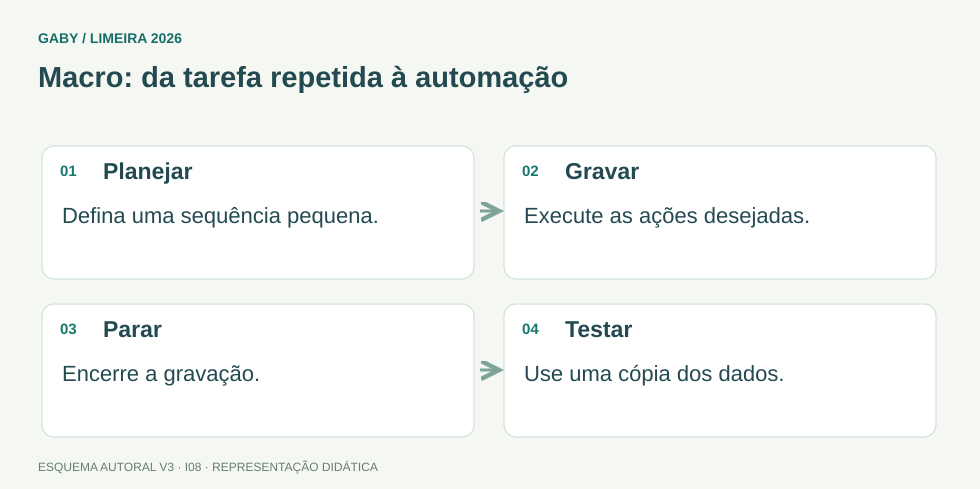

Objetivos do módulo
- Entender o que é macro e para que serve.
- Reconhecer riscos de segurança em macros.
- Distinguir macro de fórmula/função.
- Exibir a guia Desenvolvedor, gravar, nomear, armazenar e executar uma macro.
- Ler um trecho de código VBA linha a linha: procedimentos, variáveis, objetos, condições, laços e tratamento de erros.
- Dizer o que fazem as propriedades e os métodos de planilha mais cobrados (Value, Cells, Offset, Resize, Copy, PasteSpecial, ClearContents).
- Escolher o formato de arquivo certo e configurar a segurança de macros na Central de Confiabilidade.
Macro: da tarefa repetida à automação

Descrição em texto do esquema
- Planejar: Defina uma sequência pequena.
- Gravar: Execute as ações desejadas.
- Parar: Encerre a gravação.
- Testar: Use uma cópia dos dados.
Oficina visual · aplique o esquema
Uma macro formata cabeçalhos toda semana. Por que é útil testá-la em uma cópia antes de usar a planilha principal?
Atividade autoral complementar da V3. Registre sua resposta; a resolução está no arquivo de gabarito e revisão.
Mapa do conteúdo
- 1. Conceito
- 2. Macro x fórmula
- 3. Segurança
- 4. Arquivos habilitados
- 5. Guia Desenvolvedor e gravador de macros
- 6. Como ler código VBA: procedimentos, variáveis e mensagens
- 7. Modelo de objetos: pastas, planilhas e células
- 8. Copiar, colar, limpar e formatar intervalos
- 9. Decisões, laços e tratamento de erros
1. Conceito
Referência desta aula: Excel do Microsoft 365 para Windows (aplicativo de área de trabalho) em português do Brasil. Os nomes de guias e botões estão em português; as palavras da linguagem VBA são sempre em inglês, em qualquer idioma do Excel.
Macro é uma sequência de comandos que o Excel executa de uma vez, para repetir uma tarefa sem que a pessoa refaça cada passo. No Excel de área de trabalho, a macro é escrita em VBA (Visual Basic for Applications) e fica guardada em um módulo de código dentro da própria pasta de trabalho. Ela pode nascer de duas formas: gravada (o Excel observa suas ações e escreve o código) ou programada (alguém digita o código no editor).
O que a prova costuma trocar
- A linguagem das macros é VBA, não JavaScript. Existe outra tecnologia, os Scripts do Office (Office Scripts), que usa um ambiente JavaScript/TypeScript e foi feita para a nuvem. Ela não muda a linguagem das macros: macro do Excel é VBA.
- As macros não foram retiradas do Office. Desde o Office 2007 o que mudou foi o formato de arquivo: a pasta comum (.xlsx) deixou de guardar código e surgiu a pasta habilitada para macro (.xlsm). Word e Excel continuam executando macros até hoje, no Microsoft 365.
- VBA é comum aos aplicativos do Office. Word, Excel e PowerPoint têm o mesmo editor e a mesma linguagem. Uma macro pode inclusive acionar outros aplicativos do Office: por exemplo, atualizar uma tabela no Excel e depois abrir o Outlook para enviá-la por e-mail. Isso não dispensa contas nem permissões desses aplicativos.
- Excel para a Web não trabalha com VBA. No navegador é possível abrir e editar uma pasta que contém macros, e as macros existentes permanecem guardadas nela; mas não é possível criar, executar nem editar macros VBA. Para isso, abre-se a pasta no aplicativo de área de trabalho.
2. Macro x fórmula
Fórmula calcula valor em célula; macro pode manipular planilhas, formatar, importar dados, executar rotinas e interagir com objetos. São conceitos diferentes.
| Aspecto | Fórmula ou função de planilha | Macro |
|---|---|---|
| Onde fica | Na célula, começando por = | Em um módulo de código VBA da pasta |
| Quando age | Recalcula sozinha quando os dados mudam | Só quando alguém (ou um evento) a executa |
| O que faz | Devolve um valor para a própria célula | Executa ações: formata, copia, cria planilhas, salva, exibe mensagens |
| Exemplos | =SE(B2>=6;"Aprovado";"Reprovado"), =SOMA(A1:A10) | Procedimento Sub FormatarRelatorio() |
Referência absoluta (com $), Tabela Dinâmica, Formatação Condicional e funções lógicas como SE e E são recursos de planilha. Nenhum deles grava e repete ações: quem faz isso é a macro.
3. Segurança
Macros podem executar código e, portanto, representar risco. Não se deve habilitar macros de origem desconhecida. O Office possui configurações de segurança, locais confiáveis e assinaturas digitais. As macros vêm desabilitadas por padrão nas versões atuais.
Vírus de macro
Vírus de macro é um código malicioso escrito na linguagem de macro e embutido em um documento (planilha do Excel, documento do Word). Ele se espalha por meio de aplicativos que permitem programação embutida nos arquivos e costuma chegar como anexo de e-mail com aparência de fatura, recibo ou intimação. O código só age se for executado; por isso o golpe tenta convencer a pessoa a habilitar as macros.
- Nem toda macro é vírus: o risco está no código de origem desconhecida.
- Antivírus atualizado e Microsoft Defender ativo ajudam, mas não tornam confiável um arquivo externo. A regra continua: não habilitar macros de origem desconhecida.
- Abrir o editor para olhar o código (Alt+F11) não executa a macro nem prova que ela é segura.
Configurações de Macro na Central de Confiabilidade
Caminho: Arquivo > Opções > Central de Confiabilidade > Configurações da Central de Confiabilidade > Configurações de Macro. Outro acesso: guia Desenvolvedor, botão Segurança de Macro. O primeiro passo é sempre Arquivo > Opções; provas inventam etapas e nomes de janelas para testar isso.
| Opção no Excel | Efeito |
|---|---|
| Desabilitar macros VBA sem notificação | As macros ficam desabilitadas e nenhum aviso é exibido. |
| Desabilitar macros VBA com notificação | As macros ficam desabilitadas, mas aparece um aviso quando o arquivo contém macros; a pessoa decide caso a caso. |
| Desabilitar macros VBA, exceto macros assinadas digitalmente | Macros assinadas por um fornecedor confiável são executadas; as não assinadas ficam desabilitadas. |
| Habilitar macros VBA (não recomendado; código potencialmente perigoso pode ser executado) | Todas as macros são executadas sem pergunta. Deixa o computador exposto a código malicioso. |
- Algumas provas escrevem “Desativar” no lugar de “Desabilitar”; o efeito cobrado é o mesmo.
- A configuração vale só para o aplicativo em que foi alterada. Mudar no Excel não muda no Word nem no PowerPoint.
- Em computadores do trabalho, o administrador pode fixar a configuração e impedir a alteração.
Avisos ao abrir um arquivo com macros
- Barra de Mensagens com “Habilitar Conteúdo”: aparece quando as macros estão desabilitadas com notificação. Clicar no botão habilita as macros daquele arquivo, que passa a ser um documento confiável. Só clique se conhecer a origem e precisar da macro.
- Arquivo vindo da Internet: o Office bloqueia as macros de arquivos baixados da Internet ou recebidos por e-mail e mostra a faixa “Risco de segurança. A Microsoft bloqueou a execução de macros porque a origem do arquivo não é confiável.”. Nesse caso não há botão para habilitar. Se o arquivo for comprovadamente seguro, o desbloqueio é feito fora do Excel: Explorador de Arquivos, botão direito no arquivo, Propriedades, guia Geral, caixa Desbloquear.
- Locais Confiáveis: pastas que a pessoa declara seguras em Central de Confiabilidade > Locais Confiáveis. Arquivos guardados nelas abrem com as macros habilitadas, sem verificação. Só devem receber arquivos de origem conhecida.
- Assinatura digital: identifica quem publicou a macro e mostra se o código foi alterado depois de assinado. Ela não esconde o código nem garante que ele seja inofensivo.
Proteção do projeto VBA
O conjunto de módulos de uma pasta chama-se projeto VBA (no editor aparece como VBAProject). Para impedir que outra pessoa veja ou altere o código, usa-se a proteção do próprio projeto, no Editor do Visual Basic:
- Abrir o editor com Alt+F11.
- Menu Ferramentas > Propriedades de VBAProject.
- Guia Proteção: marcar a opção de bloquear o projeto para exibição e informar a senha duas vezes (Senha e Confirmar senha).
- Salvar e fechar a pasta. Ao reabrir, o código só é mostrado a quem digitar a senha.
| Recurso | O que protege | Protege o código da macro? |
|---|---|---|
| Proteção do projeto VBA com senha | Exibição e edição do código no editor | Sim |
| Proteger Planilha / Proteger Pasta de Trabalho (guia Revisão) | Células e estrutura das planilhas | Não |
| Assinatura digital da macro | Identificação da origem e integridade | Não: o código continua visível |
| Marcar como Final / somente leitura | Desestimula a edição do conteúdo | Não |
| Controlar Alterações (Word) | Registro de mudanças no texto do documento | Não |
A senha do projeto dificulta a leitura do código; não é criptografia do arquivo nem impede que a macro seja executada.
4. Arquivos habilitados
A pasta de trabalho padrão do Excel (.xlsx) não armazena código VBA. Para guardar macros é preciso escolher, em Arquivo > Salvar como, um formato habilitado para macro; o mais comum é o .xlsm. Essa distinção aparece com frequência em questões.
| Extensão | Tipo | Guarda macros VBA? |
|---|---|---|
| .xlsx | Pasta de Trabalho do Excel (formato padrão) | Não |
| .xlsm | Pasta de Trabalho Habilitada para Macro do Excel | Sim |
| .xlsb | Pasta de Trabalho Binária do Excel | Sim (é o formato da pasta pessoal de macros, PERSONAL.XLSB) |
| .xltx | Modelo do Excel | Não |
| .xltm | Modelo Habilitado para Macro do Excel | Sim |
| .xlam | Suplemento do Excel | Sim |
Se uma pasta com macro for salva como .xlsx, o código VBA não é gravado no arquivo. Trocar a extensão manualmente (para .exe, .pdf etc.) não cria, não habilita nem corrige macros.
5. Guia Desenvolvedor e gravador de macros
Exibir a guia Desenvolvedor
Os comandos de macro ficam na guia Desenvolvedor, que vem oculta por padrão. Para exibi-la:
- Arquivo > Opções > Personalizar Faixa de Opções.
- Na lista Guias Principais, marcar a caixa Desenvolvedor.
- Confirmar em OK. A guia permanece visível até que a caixa seja desmarcada.
No grupo Código dessa guia ficam os botões Visual Basic, Macros, Gravar Macro, Usar Referências Relativas e Segurança de Macro.
Gravar Macro
O gravador de macros registra as ações feitas na planilha (digitar, selecionar células, formatar, clicar em comandos) e as converte em código VBA guardado em um módulo. Executar a macro depois repete o mesmo efeito. O gravador não abre o editor, não altera uma macro existente e não cria funções: ele produz um procedimento Sub.
- Guia Desenvolvedor > grupo Código > Gravar Macro.
- Preencher a caixa de diálogo: Nome da macro, Tecla de atalho (opcional), Armazenar macro em e Descrição (opcional). Confirmar em OK.
- Executar na planilha as ações que devem ser repetidas.
- Clicar em Parar Gravação.
Regras do nome da macro
- O primeiro caractere é uma letra.
- Os demais podem ser letras, números ou sublinhado (
_). - Não pode ter espaços; use o sublinhado para separar palavras.
- Não deve coincidir com uma referência de célula.
| Nome | Válido? | Motivo |
|---|---|---|
Limpar_Cadastro | Sim | Começa por letra e usa sublinhado |
Etapa2 | Sim | Número depois da letra inicial é permitido |
2aEtapa | Não | Começa por número |
Limpar Cadastro | Não | Contém espaço |
B7 | Não | É uma referência de célula |
Tecla de atalho
Na caixa Tecla de atalho digita-se uma letra: minúscula gera Ctrl+letra; maiúscula gera Ctrl+Shift+letra. Se a combinação já pertencer a um comando do Excel, o atalho da macro substitui o atalho padrão enquanto a pasta que contém a macro estiver aberta. Exemplo: uma macro com Ctrl+Z faz Ctrl+Z deixar de desfazer enquanto aquela pasta estiver aberta. Por isso prefira Ctrl+Shift+letra.
Armazenar macro em
| Opção | Onde a macro fica | Quando está disponível |
|---|---|---|
| Esta Pasta de Trabalho | Na pasta em que você está gravando | Quando essa pasta está aberta |
| Pasta de Trabalho Pessoal de Macros | No arquivo oculto PERSONAL.XLSB, na pasta XLSTART do usuário | Sempre que o Excel for iniciado naquele computador |
A pasta de trabalho pessoal de macros é criada pelo Excel na primeira vez em que essa opção é escolhida. Ela é aberta de forma oculta toda vez que o Excel inicia; por isso suas macros podem ser usadas em qualquer pasta aberta.
Referências absolutas e relativas na gravação
- Gravação absoluta (padrão): o código guarda os endereços exatos. Se você gravou a digitação em B2, a macro escreverá sempre em B2.
- Gravação relativa (botão Usar Referências Relativas ligado antes de gravar): o código guarda o deslocamento a partir da célula ativa. Se você estava em B2 e foi para a célula de baixo, a macro irá para a célula de baixo de onde o cursor estiver ao ser executada.
Boas práticas do gravador
- Erros também são gravados. O gravador registra quase tudo, inclusive o clique errado; ele não adivinha a intenção. Para corrigir, regrava-se a sequência ou edita-se o código VBA.
- Prefira macros curtas. Um processo longo fica mais fácil de entender, testar e corrigir quando é dividido em macros menores, cada uma com uma tarefa.
- Planeje os passos antes de gravar e teste em uma cópia dos dados.
Executar, editar e ver o código
| Ação | Como fazer |
|---|---|
| Listar e executar macros | Guia Desenvolvedor > Macros ou Alt+F8; selecionar a macro e clicar em Executar |
| Executar pelo teclado | A tecla de atalho definida para a macro |
| Executar por um botão na planilha | Guia Desenvolvedor > grupo Controles > Inserir > Controles de Formulário > Botão; ao desenhar o botão abre-se a caixa Atribuir Macro |
| Abrir o Editor do Visual Basic (VBE) e ver o código | Alt+F11 ou guia Desenvolvedor > Visual Basic |
| Alterar uma macro existente | Alt+F8 > selecionar a macro > Editar (abre o código no editor) |
Alt+F11 funciona no Word e no Excel e apenas abre o editor; não executa nada. F12 abre Salvar como.
6. Como ler código VBA: procedimentos, variáveis e mensagens
A prova não pede que você programe. Pede que você leia um trecho curto e diga o que ele faz. O código é executado de cima para baixo, uma linha por vez. O que vem depois de um apóstrofo (') é comentário e é ignorado.
Sub: o procedimento que executa ações
Toda macro é um procedimento Sub. Ele começa em Sub Nome() e termina em End Sub. É o que o gravador produz e o que aparece na lista de macros (Alt+F8).
Sub MarcarConferido() Range("C2").Value = "Conferido" Range("C2").Font.Bold = TrueEnd Sub
- Linha 1: abre o procedimento chamado MarcarConferido.
- Linha 2: escreve o texto Conferido na célula C2.
- Linha 3: aplica negrito à fonte da célula C2.
- Linha 4: encerra o procedimento.
Function: o procedimento que devolve um valor
Uma Function calcula e devolve um resultado. O retorno é o valor atribuído ao próprio nome da função, dentro dela. Não existe um comando “retornar”.
Function Triplo(valor As Double) As Double Triplo = valor * 3End Function
- Linha 1: a função Triplo recebe um número (
valor) e devolve um número (As Doubleno final). - Linha 2: o resultado é atribuído ao nome da função. É essa linha que define o retorno.
- Linha 3: encerra a função.
Guardada em um módulo, a função pode ser usada na planilha como qualquer outra: =Triplo(4) resulta em 12. É a chamada função definida pelo usuário, sempre escrita no editor.
| Aspecto | Sub | Function |
|---|---|---|
| Termina com | End Sub | End Function |
| Devolve valor? | Não | Sim: o valor atribuído ao próprio nome |
| Criada pelo gravador? | Sim | Não; é digitada no editor |
| Uso típico | Macro que executa ações | Cálculo usado em fórmulas ou por outros procedimentos |
Dim: declarar variáveis
Variável é um nome que guarda um dado enquanto a macro roda. Dim declara a variável e o seu tipo. Dim não coloca valor nela: o valor é dado depois, em outra instrução, com o sinal =.
Dim quantidade As LongDim setor As Stringquantidade = 15setor = "Protocolo"
- Linhas 1 e 2: declaram a variável quantidade (número inteiro) e a variável setor (texto). Neste ponto quantidade vale 0 e setor está vazia.
- Linhas 3 e 4: atribuem os valores. Texto vai entre aspas.
| Tipo | O que guarda | Exemplo de valor |
|---|---|---|
Integer | Número inteiro de -32.768 a 32.767 | 120 |
Long | Número inteiro grande (números de linha, por exemplo) | 250000 |
Double | Número com casas decimais | 7.5 (no código o separador decimal é o ponto) |
String | Texto | "Limeira" |
Boolean | Verdadeiro ou falso | True ou False |
Date | Data e hora | #12/31/2026# |
Variant | Qualquer tipo de dado; é o tipo da variável declarada sem tipo | qualquer valor, como 10 ou "Limeira" |
Range, Worksheet, Workbook | Uma referência a um objeto do Excel (intervalo, planilha, pasta) | atribuída com Set |
Option Explicit: declaração obrigatória
Option Explicit é escrita no início do módulo, antes de qualquer procedimento. Com ela, toda variável precisa ser declarada antes de ser usada. Se alguém declarar total e depois digitar totla, o VBA acusa erro na compilação, em vez de criar em silêncio uma variável nova e vazia.
Set: guardar um objeto
Para valores comuns (número, texto) basta o sinal =. Para objetos (um intervalo, uma planilha, uma pasta) a atribuição exige a palavra Set. Set faz a variável apontar para o objeto: guarda uma referência a ele, sem criar cópia.
Dim cabecalho As RangeSet cabecalho = Worksheets("Dados").Range("A1:D1")cabecalho.Font.Bold = True
- Linha 1: declara uma variável capaz de apontar para um intervalo.
- Linha 2:
Setfaz a variável apontar para A1:D1 da planilha Dados. Nenhuma célula é copiada ou criada. - Linha 3: o negrito é aplicado ao próprio intervalo A1:D1, por meio da variável.
A regra vale para funções que devolvem objeto: se a função é declarada As Range, o retorno também usa Set.
Function PrimeiraLinha() As Range Set PrimeiraLinha = Range("A1:F1")End Function
Sem o Set na linha 2, a função não devolve o intervalo: ocorre erro, porque um objeto não pode ser atribuído como se fosse um valor comum.
Operadores
| Operador | Significado | Exemplo | Resultado |
|---|---|---|---|
+ - * / | Soma, subtração, multiplicação, divisão | 7 * 2 | 14 |
Mod | Resto da divisão inteira | 17 Mod 5 | 2 (17 = 3 × 5 + 2) |
& | Junta textos | "Sala " & 12 | Sala 12 |
= <> > < >= <= | Comparações (igual, diferente, maior, menor, maior ou igual, menor ou igual) | 8 >= 6 | True |
And Or Not | E, ou, negação | Not True | False |
Mod não é o “módulo” no sentido de valor absoluto (para isso existe a função Abs). Uso clássico: n Mod 2 dá 0 quando n é par e 1 quando n é ímpar; 10 Mod 5 dá 0 porque a divisão é exata.
MsgBox e InputBox
MsgBox exibe uma caixa de mensagem, espera a pessoa clicar em um botão e retorna um código que identifica o botão clicado. Ela não escreve nada na planilha.
Dim resposta As Integerresposta = MsgBox("Apagar os lançamentos?", vbYesNo)If resposta = vbYes Then Range("D2:D50").ClearContentsEnd If
- Linha 2: mostra a pergunta com os botões Sim e Não (
vbYesNo) e guarda em resposta o botão escolhido. - Linha 3: compara o valor retornado com
vbYes. Só exibir a caixa não significa que a pessoa concordou. - Linha 4: executada apenas se a pessoa clicou em Sim.
| Constante | Para que serve |
|---|---|
vbOKOnly | Botões exibidos: só OK (é o padrão) |
vbOKCancel | Botões exibidos: OK e Cancelar |
vbYesNo | Botões exibidos: Sim e Não |
vbOK, vbCancel, vbYes, vbNo | Valores de retorno: botão em que a pessoa clicou |
InputBox faz o caminho inverso: mostra uma caixa com um campo de digitação e retorna o texto digitado. Em setor = InputBox("Informe o setor:"), a variável setor recebe o que a pessoa escreveu.
7. Modelo de objetos: pastas, planilhas e células
Para o VBA, tudo no Excel é um objeto, e os objetos ficam uns dentro dos outros. Lê-se da esquerda para a direita, do maior para o menor, com um ponto entre eles.
| Objeto | Representa | Como aparece no código |
|---|---|---|
Application | O próprio Excel | Application.ScreenUpdating |
Workbook | Uma pasta de trabalho (um arquivo) | Workbooks("Folha.xlsm"), ThisWorkbook, ActiveWorkbook |
Worksheet | Uma planilha (uma aba) | Worksheets("Dados"), Sheets(1) |
Range | Uma célula ou um intervalo | Range("A1:C5"), Cells(2, 3) |
Exemplo de leitura: Workbooks("Folha.xlsm").Worksheets("Dados").Range("B2").Value = 10 significa: na pasta Folha.xlsm, na planilha Dados, na célula B2, o valor passa a ser 10.
Propriedade, método e argumento nomeado
- Propriedade é uma característica do objeto. Lê-se ou altera-se com
=:Range("A1").Value = 5. - Método é uma ação que o objeto executa:
Range("A1").ClearContents. - Argumento nomeado informa um detalhe do método com
:=(dois-pontos e igual):Close SaveChanges:=False. Não confunda:=(argumento) com=(atribuição ou comparação). - Coleção é um conjunto de objetos do mesmo tipo, no plural:
Workbooks,Worksheets,Sheets. Pega-se um item pelo nome entre aspas ou pelo número:Worksheets("Dados"),Worksheets(1).
ThisWorkbook, ActiveWorkbook e Workbooks
| Expressão | A que pasta se refere |
|---|---|
ThisWorkbook | A pasta em que o código está guardado, esteja ela ativa ou não |
ActiveWorkbook | A pasta da janela ativa (a que está na frente) no momento |
Workbooks | A coleção de todas as pastas abertas |
Workbooks(1) | A primeira pasta aberta ou criada na sessão |
- As duas primeiras podem ser pastas diferentes. Uma macro guardada na pasta pessoal ou em um suplemento roda enquanto outra pasta está ativa:
ThisWorkbooké a pasta do código;ActiveWorkbooké a pasta que a pessoa está usando. - O número (índice) em
Workbookssegue a ordem em que as pastas foram abertas ou criadas. Ativar outra pasta não muda o índice. Não é ordem alfabética.
Salvar e fechar a pasta
| Instrução | Efeito |
|---|---|
ActiveWorkbook.Save | Grava as alterações no arquivo |
ActiveWorkbook.Saved = True | Apenas marca a pasta como salva; nada é gravado no disco. O Excel deixa de perguntar se deseja salvar ao fechar |
ActiveWorkbook.Close SaveChanges:=True | Fecha a pasta gravando as alterações |
ActiveWorkbook.Close SaveChanges:=False | Fecha a pasta sem salvar: as alterações ainda não gravadas são descartadas |
Saved é uma propriedade (um estado); Save é um método (uma ação). Saved = True não prova que os dados estão no arquivo.
Planilhas: Worksheets, Sheets e Visible
Worksheetsreúne só as planilhas de células.Sheetsreúne todas as folhas da pasta, inclusive as folhas de gráfico.- A propriedade
Visiblemostra ou oculta a planilha:Worksheets("Rascunho").Visible = Falseoculta a aba Rascunho;= Truevolta a exibi-la.
Range e Value; referência qualificada
Range("endereço") indica uma célula ou intervalo. A propriedade Value lê ou define o valor do que está na célula.
Worksheets("Dados").Range("B2").Value = "Pendente"Range("B2").Value = "Pendente"
- Linha 1: referência qualificada. A planilha foi informada; o texto vai para B2 da planilha Dados, qualquer que seja a aba aberta.
- Linha 2: referência não qualificada. Sem dizer a planilha,
Rangeatua na planilha ativa, isto é, na aba que estiver na frente quando a macro rodar. Se a pessoa estiver em outra aba, o texto vai para o lugar errado.
Value altera o conteúdo da célula. Não renomeia a planilha (isso é a propriedade Name) nem cria arquivo. Duas expressões parecidas: ActiveCell é a célula ativa e Selection é o que está selecionado; nenhuma delas representa a pasta.
Cells(linha, coluna)
Cells indica uma célula por dois números: primeiro a linha, depois a coluna. É o contrário do endereço escrito, em que a letra da coluna vem antes.
| Expressão | Leitura | Célula |
|---|---|---|
Cells(4, 3) | linha 4, coluna 3 (C) | C4 |
Cells(1, 5) | linha 1, coluna 5 (E) | E1 |
Cells(5, 1) | linha 5, coluna 1 (A) | A5 |
Cells é muito usada em laços, porque a linha e a coluna podem ser variáveis: Cells(i, 1) é a célula da coluna A na linha i.
Offset: deslocar
Offset(linhas, colunas) devolve um intervalo do mesmo tamanho, deslocado a partir do original. Linhas: positivo desce, negativo sobe. Colunas: positivo vai para a direita, negativo para a esquerda.
| Expressão | Conta | Resultado |
|---|---|---|
Range("B5").Offset(2, 1) | linha 5 + 2 = 7; coluna B + 1 = C | C7 |
Range("D6").Offset(-2, -1) | linha 6 - 2 = 4; coluna D - 1 = C | C4 |
Range("A1").Offset(0, 3) | mesma linha; coluna A + 3 = D | D1 |
Resize: redimensionar
Resize(linhas, colunas) devolve um intervalo que começa na mesma célula e passa a ter a quantidade de linhas e de colunas informada. Não desloca o início.
| Expressão | Conta | Resultado |
|---|---|---|
Range("A2").Resize(4, 3) | 4 linhas a partir da 2 (2 a 5); 3 colunas a partir de A (A a C) | A2:C5 |
Range("D1").Resize(2, 1) | 2 linhas (1 e 2); 1 coluna (D) | D1:D2 |
Range("B3").Resize(1, 4) | 1 linha (3); 4 colunas (B a E) | B3:E3 |
Para não errar: em Cells, Offset e Resize a ordem é sempre linha, depois coluna. No Resize conte a célula inicial como a primeira linha e a primeira coluna.
8. Copiar, colar, limpar e formatar intervalos
Copy e o argumento Destination
Range("A2:A10").Copy Destination:=Range("F2")Range("A2:A10").Copy
- Linha 1: copia A2:A10 diretamente para a região que começa em F2.
Destinationindica onde a cópia começa. - Linha 2: sem
Destination, o intervalo é copiado para a área de transferência, como um Ctrl+C. Nada é colado ainda; é preciso uma instrução de colagem depois.
PasteSpecial: Colar Especial
PasteSpecial cola no intervalo indicado o que foi copiado antes, escolhendo o que entra na colagem.
Range("C2:C10").CopyRange("H2").PasteSpecial Paste:=xlPasteValues
- Linha 1: copia C2:C10 para a área de transferência.
- Linha 2: cola a partir de H2 somente os valores. Se C2:C10 tinha fórmulas, H2:H10 recebe os resultados, sem as fórmulas.
| Argumento | O que decide | Valores usuais |
|---|---|---|
Paste | Que parte do conteúdo copiado é colada | xlPasteAll (tudo, inclusive fórmulas; é o padrão), xlPasteValues (só valores), xlPasteFormulas (fórmulas), xlPasteFormats (só formatos) |
SkipBlanks | Se as células vazias da origem são ignoradas | True: células vazias copiadas não são coladas por cima do destino. Padrão: False |
Transpose | Se linhas e colunas são trocadas na colagem | True: o que estava em coluna é colado em linha. Padrão: False |
Cada argumento cuida de uma coisa. SkipBlanks não trata erros nem apaga células vazias; Transpose não converte fórmulas em valores. Quem escolhe “só valores” é Paste:=xlPasteValues.
ClearContents, Clear e Delete
| Método | O que remove | O que permanece |
|---|---|---|
ClearContents | Valores e fórmulas | A formatação (cores, bordas, formato de número, formatação condicional) |
ClearFormats | A formatação | Valores e fórmulas |
Clear | Tudo: conteúdo e formatação | A célula vazia, no mesmo lugar |
Delete | As próprias células | As células vizinhas se deslocam para ocupar o espaço; a estrutura da planilha muda |
Exemplo: Range("B2:B20").ClearContents esvazia B2:B20 e mantém as bordas e as cores, deixando a área pronta para novos lançamentos. Não confunda com o método Delete, que remove as células.
Formatar: Font.Bold e NumberFormat
Range("A1:D1").Font.Bold = True:Fonté o objeto da fonte do intervalo;Boldé o negrito.Trueliga,Falsedesliga. Os valores das células não mudam.Range("C2:C30").NumberFormat = "0.00":NumberFormatlê ou define o código de formato usado para exibir os valores (aqui, duas casas decimais). Muda a aparência, não o valor guardado; não soma nem apaga nada.
With ... End With
O bloco With evita repetir o nome do objeto. Dentro do bloco, o que começa por ponto pertence ao objeto indicado na linha do With.
With Worksheets("Dados").Range("A1:D1") .Font.Bold = True .NumberFormat = "0.00"End With
- Linha 1: define o objeto do bloco, o intervalo A1:D1 da planilha Dados.
- Linha 2:
.Font.Boldequivale aWorksheets("Dados").Range("A1:D1").Font.Bold. - Linha 3:
.NumberFormattambém se refere a esse mesmo intervalo. - Linha 4:
End Withencerra o bloco.
9. Decisões, laços e tratamento de erros
If ... Then ... Else ... End If
If testa uma condição. Se ela for verdadeira, executa o que vem depois de Then; se for falsa, executa o que vem depois de Else (quando existe). Só um dos ramos é executado.
If media >= 6 Then situacao = "Aprovado"Else situacao = "Recuperação"End If
- Com media = 7,5: a condição é verdadeira; situacao recebe Aprovado e o ramo
Elseé pulado. - Com media = 4: a condição é falsa; o VBA pula para o
Elsee situacao recebe Recuperação. - A variável recebe um dos dois textos; nunca o número testado.
A mesma decisão pode vir em uma linha só, sem End If: If media >= 6 Then situacao = "Aprovado" Else situacao = "Recuperação". Para mais de duas saídas usa-se ElseIf entre o If e o Else.
For ... To ... Next: repetir contando
O laço For repete um bloco enquanto um contador vai de um valor inicial até um valor final. Next marca o fim do bloco: soma o passo ao contador e volta ao início.
soma = 0For i = 1 To 4 soma = soma + iNext i
| Volta | Valor de i | Conta | soma |
|---|---|---|---|
| 1ª | 1 | 0 + 1 | 1 |
| 2ª | 2 | 1 + 2 | 3 |
| 3ª | 3 | 3 + 3 | 6 |
| 4ª | 4 | 6 + 4 | 10 |
Ao final, soma vale 10. O método é sempre este: montar a tabela de voltas e acompanhar a variável.
Stepdefine o passo do contador. SemStep, o passo é 1.For i = 2 To 8 Step 2: i vale 2, 4, 6 e 8 (quatro voltas).For i = 10 To 7 Step -1: i vale 10, 9, 8 e 7. Para contar de trás para frente o passo negativo é obrigatório; sem ele o bloco não é executado nenhuma vez, porque 10 já passou de 7.Exit Forsai do laço antes do fim: a execução continua na instrução logo depois doNext. Não encerra o procedimento.
For linha = 2 To 200 If Cells(linha, 1).Value = "" Then Exit For End IfNext linhaMsgBox "Primeira linha vazia: " & linha
- Linha 1: linha começa em 2 e iria até 200.
- Linhas 2 a 4: se a célula da coluna A naquela linha estiver vazia,
Exit Forinterrompe o laço.End Ifsó fecha a condição; não encerra laço. - Linha 5: se a célula não estava vazia, passa para a linha seguinte.
- Linha 6: é a primeira instrução depois do laço; mostra o número da linha em que a busca parou.
For Each ... In ... Next: percorrer uma coleção
For Each repete o bloco uma vez para cada elemento de uma coleção, sem que seja preciso saber quantos são nem como se chamam.
Sub IdentificarPlanilhas() Dim ws As Worksheet For Each ws In Worksheets ws.Range("A1").Value = "Secretaria de Educação" Next wsEnd Sub
- Linha 2: declara ws, variável que aponta para uma planilha.
- Linha 3: a cada volta, ws passa a ser a próxima planilha da coleção
Worksheets. - Linha 4: escreve o texto na célula A1 da planilha da vez. Trocando essa linha por
ws.Visible = True, o laço passaria a exibir todas as planilhas ocultas. - Linha 5: vai para a planilha seguinte; quando acabam, o laço termina.
O mesmo laço pode ser escrito com In Sheets. Nesse caso entram também as folhas de gráfico; se a pasta tiver uma delas e a variável tiver sido declarada As Worksheet, ocorre erro de tipo. Também se percorrem células: For Each celula In Range("A1:A10").
Do ... Loop: repetir enquanto uma condição vale
linha = 2Do While Cells(linha, 1).Value <> "" linha = linha + 1Loop
Do While repete o bloco enquanto a condição for verdadeira: aqui, enquanto a célula da coluna A não estiver vazia (<> significa diferente). Do Until repete até que a condição se torne verdadeira. Exit Do sai antes do fim. Use For quando o número de voltas é conhecido e Do quando depende de uma condição.
| Estrutura | Quando se usa | Fecha com |
|---|---|---|
If | Escolher entre caminhos | End If |
For ... To | Repetir um número conhecido de vezes | Next |
For Each ... In | Passar por todos os itens de uma coleção | Next |
Do While / Do Until | Repetir conforme uma condição | Loop |
With | Várias instruções sobre o mesmo objeto (não é laço) | End With |
On Error: tratamento de erros
Sem tratamento, um erro durante a execução (planilha que não existe, arquivo ausente) interrompe a macro com uma mensagem. A instrução On Error muda esse comportamento.
| Instrução | Efeito |
|---|---|
On Error Resume Next | Se ocorrer erro, a execução continua na instrução seguinte, sem mensagem |
On Error GoTo Rotulo | Se ocorrer erro, a execução salta para o trecho marcado com esse rótulo, no mesmo procedimento |
On Error GoTo 0 | Desabilita o tratador de erros habilitado no procedimento atual. Não existe “linha zero” para onde saltar |
On Error Resume NextWorksheets("Resumo").Range("A1").Value = totalIf Err.Number <> 0 Then MsgBox "A planilha Resumo não foi encontrada."End IfOn Error GoTo 0
- Linha 1: daqui em diante, um erro não interrompe a macro.
- Linha 2: se a planilha Resumo não existir, esta linha falha e é simplesmente pulada.
- Linhas 3 a 5:
Err.Numberdiferente de zero indica que houve erro; a macro avisa em vez de fingir sucesso. - Linha 6: volta ao comportamento normal; erros seguintes voltam a interromper a macro.
On Error Resume Next não corrige o erro nem desfaz o que já foi feito: apenas segue adiante. Quem usa precisa verificar se a operação deu certo.
Application.ScreenUpdating e Application.EnableEvents
| Propriedade | Com False | Cuidado |
|---|---|---|
Application.ScreenUpdating | O Excel deixa de redesenhar a tela a cada passo; a macro roda mais rápido | A macro continua trabalhando e alterando dados, só não se vê. Voltar para True ao terminar |
Application.EnableEvents | O Excel deixa de disparar eventos (por exemplo, o código ligado ao ato de salvar ou de alterar uma célula) enquanto estiver assim | O código dos eventos não é apagado, só deixa de ser acionado. Voltar para True ao terminar |
Application.ScreenUpdating = FalseApplication.EnableEvents = FalseWorksheets("Dados").Range("A2:F500").ClearContentsApplication.EnableEvents = TrueApplication.ScreenUpdating = True
- Linhas 1 e 2: desligam a atualização da tela e o disparo de eventos.
- Linha 3: faz o trabalho (limpa o conteúdo de A2:F500 da planilha Dados).
- Linhas 4 e 5: restauram as duas configurações. Tela sem atualização não é sinal de que a pasta foi salva nem de que nada foi alterado.
Exemplos resolvidos passo a passo
Exemplo 1
Situação: Uma rotina formata relatório toda semana com os mesmos passos.
Exemplo 2
Situação: Recebe .xlsm de remetente desconhecido pedindo “habilite conteúdo”.
Exemplo 3 — ler uma macro inteira
Situação: A planilha ativa tem notas em B2:B4 (8, 5 e 6). O que a macro abaixo deixa na coluna C?
Sub Classificar() Dim i As Long For i = 2 To 4 If Cells(i, 2).Value >= 6 Then Cells(i, 3).Value = "OK" Else Cells(i, 3).Value = "Baixa" End If Next iEnd Sub
Cells(i, 2) é a coluna B na linha i; Cells(i, 3) é a coluna C na mesma linha. i = 2: B2 vale 8, a condição é verdadeira, C2 recebe OK. i = 3: B3 vale 5, a condição é falsa, C3 recebe Baixa. i = 4: B4 vale 6, e 6 >= 6 é verdadeiro, C4 recebe OK. Resultado: C2 = OK, C3 = Baixa, C4 = OK. Como Cells não foi qualificada, tudo acontece na planilha ativa.Exemplo 4 — Offset e Resize combinados
Situação: Que intervalo é limpo por Range("B3").Offset(1, 2).Resize(2, 2).ClearContents, e o que acontece com as cores das células?
Range("B3").Offset(1, 2): uma linha abaixo (3 + 1 = 4) e duas colunas à direita (B, C, D), chegando a D4. .Resize(2, 2): a partir de D4, duas linhas (4 e 5) e duas colunas (D e E), isto é, D4:E5. .ClearContents apaga valores e fórmulas de D4:E5; as cores, bordas e formatos de número permanecem.Exemplo 5 — contador com Step e Mod
Situação: Qual é o valor de conta ao final do trecho?
conta = 0For n = 9 To 3 Step -2 If n Mod 3 = 0 Then conta = conta + 1Next n
Exemplo 6 — arquivo baixado com macro
Situação: Uma servidora baixa do e-mail a pasta Escala.xlsm, enviada por um colega de outro setor. Ao abrir, vê a faixa de risco de segurança dizendo que a execução de macros foi bloqueada, sem botão para habilitar. Ela pensa em resolver trocando a configuração para “Habilitar macros VBA”.
Pegadinhas e erros frequentes
- Achar que macro é só fórmula.
- Habilitar conteúdo desconhecido.
- Confundir .xlsx com .xlsm.
- Dizer que macro do Excel é escrita em JavaScript: é VBA. JavaScript/TypeScript é dos Scripts do Office.
- Achar que o Excel para a Web executa ou edita macros VBA: ele só abre e edita a pasta, preservando as macros.
- Atribuir ao botão Gravar Macro o que é do editor: abrir o VBE (Alt+F11), alterar código existente, criar Function.
- Aceitar nome de macro com espaço, começando por número ou igual a uma referência de célula.
- Esquecer que o atalho da macro substitui o atalho padrão do Excel enquanto a pasta está aberta.
- Supor que a configuração de macros feita no Excel vale para o Word e o PowerPoint.
- Confundir “sem notificação” (bloqueia e não avisa) com “com notificação” (bloqueia e avisa).
- Achar que antivírus atualizado autoriza habilitar macros de origem externa.
- Proteger o código com Proteger Planilha, assinatura digital ou Marcar como Final: o que protege o código é a senha do projeto VBA.
- Ler
Dimcomo atribuição de valor: ele só declara. - Esquecer o
Setao guardar ou retornar um objetoRange. - Tratar
Modcomo valor absoluto: é o resto da divisão. - Achar que
MsgBoxescreve na planilha ou que exibir a pergunta já equivale a um “Sim”. - Inverter
Cells(linha, coluna):Cells(4, 3)é C4, não D3. - Confundir
Offset(desloca) comResize(muda o tamanho mantendo o início). - Confundir
ClearContents(mantém a formatação) comClear(apaga tudo) e comDelete(remove as células e desloca as vizinhas). - Confundir
ThisWorkbook(pasta do código) comActiveWorkbook(pasta ativa). - Tomar
Saved = Truepor salvamento: sóSavegrava o arquivo. - Ler
On Error GoTo 0como salto para a linha zero: ele desabilita o tratamento de erros. - Achar que
On Error Resume Nextcorrige o erro: ele apenas continua. - Esquecer o
Step -1em um laço que conta de trás para frente.
Resumo de prova
- Macro automatiza ações.
- VBA é linguagem associada ao Office.
- .xlsm suporta macros.
- Macros podem ser vetor de malware.
- Macro = comandos em VBA guardados em módulo; gravada ou digitada. Não é JavaScript.
- Guia Desenvolvedor: Arquivo > Opções > Personalizar Faixa de Opções.
- Gravar Macro registra ações e gera um
Sub; erros também são gravados. - Nome da macro: começa por letra, sem espaços, sublinhado permitido, diferente de endereço de célula.
- Atalho da macro substitui o atalho padrão enquanto a pasta está aberta.
- Pasta pessoal de macros: PERSONAL.XLSB, oculta, aberta ao iniciar o Excel.
- Alt+F11 abre o Editor do Visual Basic; Alt+F8 lista as macros.
- Guardam macro: .xlsm, .xlsb, .xltm, .xlam. Não guardam: .xlsx, .xltx.
- Excel para a Web: abre e edita a pasta; não cria, executa nem edita VBA.
- Central de Confiabilidade > Configurações de Macro: quatro opções, válidas só para o aplicativo.
- Arquivo da Internet: macros bloqueadas; desbloqueio em Propriedades do arquivo.
- Código protegido por senha: Propriedades de VBAProject, guia Proteção.
Subexecuta;Functionretorna o valor atribuído ao próprio nome.Dimdeclara;Option Explicitobriga a declarar;Setatribui objeto.Mod= resto.MsgBoxretorna o botão clicado (vbYes,vbNo).Cells(linha, coluna);Offsetdesloca;Resizeredimensiona.Rangesem planilha atua na planilha ativa.CopysemDestinationvai para a área de transferência;PasteSpecial Paste:=xlPasteValuescola só valores.ClearContentslimpa conteúdo e mantém formatação.ThisWorkbook= pasta do código;ActiveWorkbook= pasta ativa.Close SaveChanges:=Falsefecha sem salvar.For ... To ... Step,Exit For,For Each ... In,Do ... Loop.On Error Resume Nextcontinua;On Error GoTo 0desabilita o tratamento.ScreenUpdatingeEnableEvents: desligar comFalsee restaurar comTrue.
Exercícios do módulo
Resolva sem consultar o arquivo de gabarito. As questões são autorais e construídas para treinar os conceitos do edital.
- somente somar células
- compactar Windows
- enviar e-mail sempre
- automatizar tarefas
- Value Base Array
- Visual Browser API
- Visual Basic for Applications
- Virtual Binary Access
- .txt
- .xlsm
- .xlsx
- .jpg
- ser tratada com cautela
- ser sempre habilitada
- ser executada como administrador
- ser enviada a todos
- são sempre iguais
- não podem coexistir
- só funcionam offline
- são conceitos diferentes
- cria vídeo
- faz backup do Windows
- registra ações para reprodução
- grava áudio
- não interagir com células
- formatar e manipular planilhas
- apenas mudar papel
- somente imprimir
- macro pode executar código
- células são perigosas fisicamente
- gráficos usam internet sempre
- Excel não salva arquivos
- é executável
- é imagem
- é PDF
- não é formato VBA macro-enabled padrão
- mudar fonte
- compactar arquivo
- verificar origem/integridade
- aumentar soma
Quando terminar, abra Informática 08 - Excel - Macros - Gabarito e Revisão.
Checklist de domínio
- ☐ Entender o que é macro e para que serve.
- ☐ Reconhecer riscos de segurança em macros.
- ☐ Distinguir macro de fórmula/função.
- ☐ Explicar por que macro do Excel é VBA e não JavaScript, e o que o Excel para a Web não faz.
- ☐ Exibir a guia Desenvolvedor e descrever os campos da caixa Gravar Macro.
- ☐ Julgar se um nome de macro é válido.
- ☐ Dizer onde fica e para que serve a pasta de trabalho pessoal de macros.
- ☐ Indicar quais extensões guardam macros.
- ☐ Percorrer o caminho até Configurações de Macro e explicar as quatro opções.
- ☐ Explicar vírus de macro, bloqueio de arquivos da Internet, Locais Confiáveis e assinatura digital.
- ☐ Proteger o projeto VBA com senha e diferenciar isso de proteger a planilha.
- ☐ Diferenciar
SubdeFunctione dizer como a função retorna valor. - ☐ Explicar
Dim,Option ExpliciteSet. - ☐ Calcular expressões com
Mode interpretar o retorno deMsgBox. - ☐ Converter
Cells,OffseteResizeem endereços de célula. - ☐ Diferenciar
ClearContents,CleareDelete;Copycom e semDestination; argumentos dePasteSpecial. - ☐ Diferenciar
ThisWorkbookdeActiveWorkbookeSavedeSaved. - ☐ Acompanhar em tabela um laço
ForcomStepe umIfcomElse. - ☐ Explicar
For Each,With,On Error Resume Next,On Error GoTo 0,ScreenUpdatingeEnableEvents.
Meta do módulo: 80% ou mais nas questões, sem depender de consulta.
Referências e conteúdos auxiliares
- Microsoft Learn — Tipo de dados VariantVariant é o tipo das variáveis declaradas sem tipo explícito e pode conter qualquer tipo de dado. Conferido em 17/11/2026.
- Microsoft — Início rápido: criar uma macroGravação de macros e guia Desenvolvedor; confira versões compatíveis.
- Microsoft — Auxílio e aprendizado do ExcelCentral de ajuda para tabelas, filtros, classificação, gráficos e fórmulas.
- Microsoft — Automatizar tarefas com o gravador de macrosGravador, erros gravados, macros curtas, regras do nome, tecla de atalho, Armazenar macro em, outros aplicativos, Alt+F8 e Alt+F11. Conferido em 17/11/2026.
- Microsoft — Mostrar a guia DesenvolvedorGuia oculta por padrão e passos para exibi-la. Conferido em 17/11/2026.
- Microsoft — Criar e salvar todas as macros em uma única pasta de trabalhoPasta de trabalho pessoal de macros (Personal.xlsb, XLSTART, abertura oculta). Conferido em 17/11/2026.
- Microsoft — Executar uma macro no ExcelFormas de executar e combinações Ctrl+letra e Ctrl+Shift+letra. Conferido em 17/11/2026.
- Microsoft — Atribuir uma macro a um botãoControles de Formulário e caixa Atribuir Macro. Conferido em 17/11/2026.
- Microsoft — Trabalhar com macros VBA no Excel para a WebO que a versão web permite e não permite. Conferido em 17/11/2026.
- Microsoft — Formatos de arquivo com suporte no ExcelFormatos que armazenam ou não código VBA. Conferido em 17/11/2026.
- Microsoft — Habilitar ou desabilitar macros em arquivos do Microsoft 365Caminho da Central de Confiabilidade, nomes e efeitos das opções, validade por aplicativo, Habilitar Conteúdo. Conferido em 17/11/2026.
- Microsoft — As macros da Internet são bloqueadas por padrão no OfficeFaixa de risco de segurança e desbloqueio em Propriedades. Conferido em 17/11/2026.
- Microsoft — Adicionar, remover ou alterar um local confiávelConceito e caminho de Locais Confiáveis. Conferido em 17/11/2026.
- Microsoft Learn — Software mal-intencionado de macroComo o vírus de macro se propaga e como se proteger. Conferido em 17/11/2026.
- Microsoft Learn — Diferenças entre Scripts do Office e macros VBAScripts do Office usam JavaScript e a web; macros VBA são da área de trabalho. Conferido em 17/11/2026.
- Microsoft Learn — Caixa de diálogo Propriedades do Projeto (VBA)Guia Proteção: bloqueio do projeto e senha. Conferido em 17/11/2026.
- Microsoft Learn — VBA language reference: statementsInstruções Sub, Function, Dim, Set, Option Explicit, If...Then...Else, For...Next, For Each...Next, Do...Loop, With, Exit e On Error. Conferido em 17/11/2026.
- Microsoft Learn — MsgBox functionRetorno de MsgBox e constantes de botões; conferidos também InputBox, operador Mod, operador & e função Abs na mesma referência. Conferido em 17/11/2026.
- Microsoft Learn — Range object (Excel)Value, Offset, Resize, Copy, PasteSpecial, Clear, ClearContents, ClearFormats, Delete, NumberFormat e Font.Bold. Conferido em 17/11/2026.
- Microsoft Learn — Workbook object (Excel)Índice da coleção Workbooks, Save, Saved, Close e SaveChanges; ThisWorkbook e ActiveWorkbook. Conferido em 17/11/2026.
- Microsoft Learn — Worksheet.Cells property (Excel)Ordem linha, coluna; conferidos também Sheets, Worksheets e Worksheet.Visible. Conferido em 17/11/2026.
- Microsoft Learn — Application.ScreenUpdating property (Excel)ScreenUpdating, EnableEvents, Application.Range sem qualificador e RecordRelative (gravação relativa ou absoluta). Conferido em 17/11/2026.
Referências externas de apoio consultadas para a V3 em 27/09/2026. A origem das questões é o material autoral do projeto; estes links não indicam que uma instituição publicou ou validou os exercícios. As páginas externas precisam de internet. Em informática, confira a versão do programa; em legislação, observe o recorte e as regras de atualização do edital.